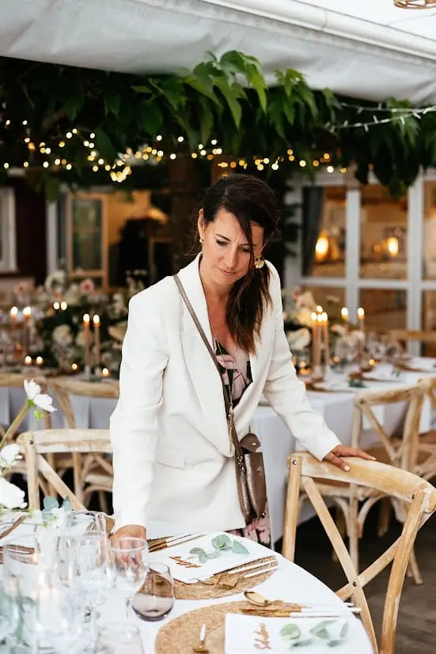
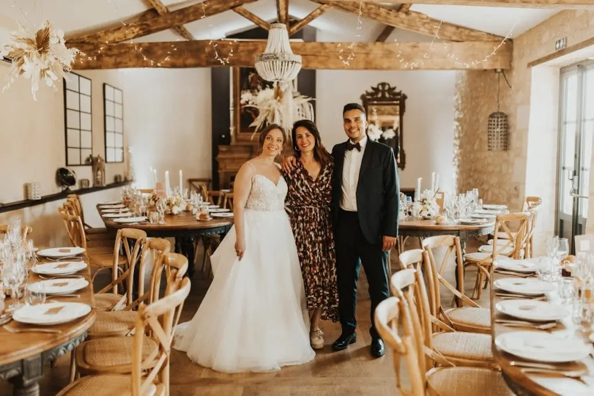
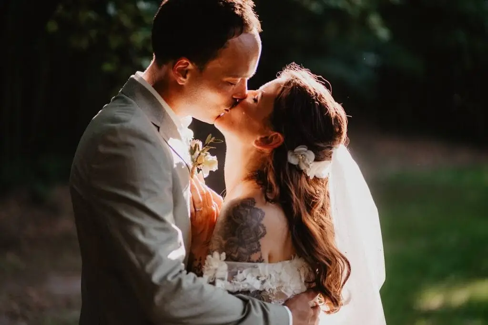
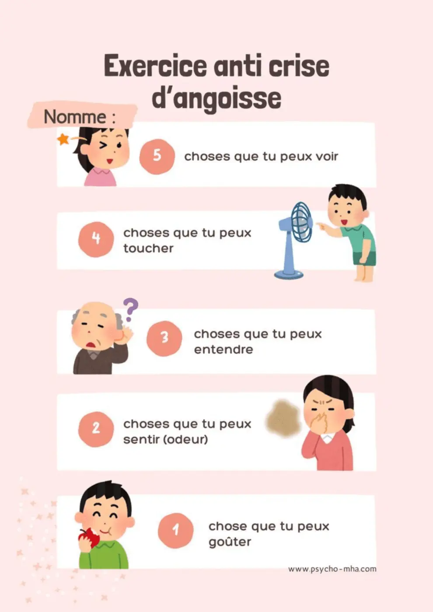
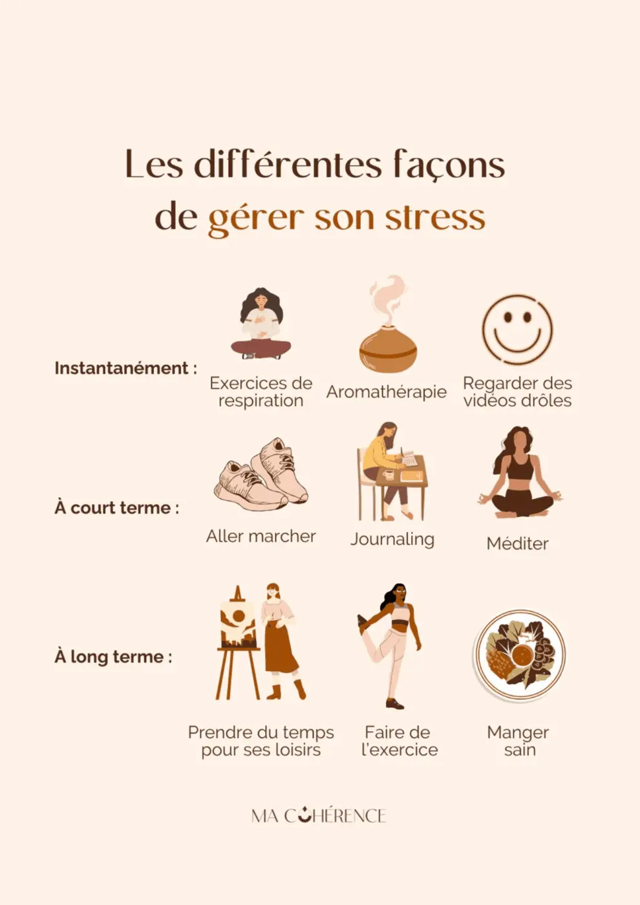

Organiser un mariage est une expérience unique, remplie de joie et d’excitation, mais elle peut aussi devenir une source importante de stress. Entre la recherche des prestataires, le choix du lieu, la coordination des invités et la gestion du budget, il est facile de se sentir submergé. Pourtant, votre bien-être est la clé pour profiter pleinement de cette aventure et savourer le jour J. Et en tant que Wedding planner et coordinatrice Jour j à Bordeaux et Nouvelle Aquitaine, je suis là pour vous aider !
Planifier pour mieux gérer
En tant que wedding planner, je le dis toujours aux futurs mariés que j’accompagne : la planification est votre meilleure alliée contre le stress. Mettre en place un planning détaillé, mois par mois, permet d’avoir une vision claire de l’ensemble des préparatifs et d’avancer étape par étape, sans se sentir dépassés.
Je vous conseille de noter dès le début toutes les échéances importantes : les rendez-vous avec les prestataires, les dates de paiement, les commandes de décoration, les essayages des tenues, l’envoi des faire-part ou encore les validations finales. Ce planning devient votre fil conducteur. Il vous rassure, vous permet de suivre votre avancée et vous évite les oublis de dernière minute, souvent source d’angoisse.
Un autre point essentiel est la délégation. Beaucoup de couples pensent qu’ils doivent tout gérer seuls pour garder le contrôle. Pourtant, déléguer certaines tâches est souvent ce qui permet de retrouver de la sérénité. Je vous encourage à confier des missions bien définies à vos proches ou à votre wedding planner : la logistique, les échanges avec les prestataires, la coordination des invitations ou encore le suivi du rétroplanning.
Déléguer ne signifie pas lâcher prise sur votre mariage, mais au contraire vous offrir de l’espace mental pour profiter de cette période unique. Mon rôle, en tant que wedding planner, est justement de vous soulager de la charge mentale, de structurer l’organisation et de vous permettre de vous concentrer sur l’essentiel : vos émotions, votre couple et le plaisir de préparer ce grand jour en toute confiance.

Comment prendre soin de soi ?
Pendant les préparatifs, je rappelle souvent aux futurs mariés qu’il est essentiel de prendre soin d’eux, même au cœur de l’organisation. Un mariage est un projet important, mais il ne doit jamais prendre toute la place au point d’effacer les moments de calme et de connexion avec soi-même et avec son couple.
Je vous encourage vivement à préserver des instants rien que pour vous : une séance de yoga, quelques minutes de méditation, une promenade en pleine nature ou simplement une soirée détente à deux, sans parler mariage. Ces parenthèses sont précieuses : elles permettent de recharger vos batteries et d’aborder les décisions avec plus de recul et de sérénité.
Parfois, il suffit de très peu. Quelques minutes par jour de respiration profonde, une pause sans téléphone, un moment de silence ou un massage peuvent sembler anodins, mais ces petits gestes anti-stress ont un impact énorme sur votre bien-être. Ils apaisent l’esprit, relâchent les tensions et vous aident à rester pleinement présents dans cette belle aventure.
En tant que wedding planner, mon rôle est aussi de veiller à votre équilibre. Un couple détendu prend de meilleures décisions et vit les préparatifs avec plus de plaisir. Se préserver, ce n’est pas un luxe, c’est une nécessité pour vivre un mariage serein et aligné avec vos émotions
Communiquer avec son partenaire
En tant que wedding planner, je ne le répète jamais assez : la communication est un pilier fondamental pour des préparatifs sereins. Le mariage est un projet à deux, et partager régulièrement vos envies, vos priorités et vos inquiétudes permet d’éviter de nombreux malentendus et tensions inutiles.
Je conseille souvent aux couples de prévoir des points réguliers, même courts, pour faire le point sur les décisions prises, ajuster le planning ou valider les choix avec calme. Cela transforme chaque décision en un choix partagé, où chacun se sent entendu et impliqué.
Cette communication active réduit naturellement la pression et permet de rester alignés tout au long des préparatifs. Elle aide aussi à garder l’esprit léger, à savourer les étapes importantes et à vivre cette aventure ensemble, sereinement. Après tout, un mariage réussi commence par un couple qui avance main dans la main, dans l’écoute et le respect mutuel.
Comment gérer les relations familiales ?
La famille est souvent un soutien précieux pendant les préparatifs, mais elle peut aussi être source de pressions ou de conflits. Les attentes de certains proches – sur le budget, la liste des invités ou les traditions – peuvent parfois générer beaucoup de stress. Pour préserver votre sérénité, il est important d’établir des limites claires et de communiquer vos décisions avec bienveillance. Impliquer votre famille dans ce qui les passionne, sans leur laisser le contrôle total, permet de bénéficier de leur aide tout en restant maître de votre journée. Certaines demandes pourront être respectées, d’autres adaptées selon vos priorités, afin de garder l’harmonie et le plaisir des préparatifs. En tant que wedding planner, je joue également le rôle de médiatrice. Je sais comment gérer les tensions et trouver des compromis pour que chacun se sente entendu, tout en préservant vos envies et votre vision du mariage. L’objectif est simple : vous permettre de profiter pleinement de cette aventure avec vos proches, dans la joie et la sérénité.
S’appuyer sur un coaching professionnel

Un wedding planner n’est pas seulement un organisateur, c’est aussi un véritable coach émotionnel. Nous vous accompagnons pour clarifier vos priorités et votre vision du mariage, afin que chaque décision reflète vraiment vos envies. Nous vous aidons à prendre du recul sur les détails qui pourraient devenir anxiogènes et à relativiser les petites tensions du quotidien. Nous anticipons avec vous les imprévus en établissant des plans B, ce qui permet de diminuer considérablement le stress lié à l’organisation. Grâce à cet accompagnement sur-mesure, vous pouvez vous concentrer sur l’essentiel : votre couple et vos émotions, en ayant la sérénité de savoir que la logistique et tous les aspects pratiques sont entre de bonnes mains.
Vous devez éviter les comparaisons
Les réseaux sociaux regorgent d’images de mariages parfaits et d’inspirations en tous genres, mais il est important de se rappeler que chaque couple est unique. En tant que wedding planner, je conseille toujours aux futurs mariés de se concentrer sur ce qui leur ressemble vraiment et sur leurs envies personnelles, plutôt que de chercher à reproduire un idéal imposé par les tendances. La perfection n’existe pas et un mariage réussi n’est pas celui qui suit à la lettre les modes ou les clichés, mais celui qui reflète votre amour, votre personnalité et votre histoire. En gardant cette vision, vous pouvez préparer votre journée avec sérénité et authenticité, et profiter pleinement de chaque instant sans stress inutile.
Rester flexible face aux imprévus
Même avec une préparation minutieuse, il arrive que des imprévus surgissent : un prestataire en retard, une météo capricieuse ou l’oubli d’un petit détail. En tant que wedding planner, j’accompagne les couples pour rester flexibles et positifs, car chaque situation peut se transformer en moment unique. Une cérémonie déplacée peut devenir plus intime et émouvante, un retard peut se transformer en un temps de partage convivial, et un petit incident réparé à la dernière minute devient souvent une anecdote mémorable, dont on se souvient avec le sourire. L’important est de garder le calme et de profiter de la journée, en sachant que chaque imprévu peut être transformé en expérience positive et pleine d’émotion
A vous de profiter de l’instant présent

Pour moi, un mariage n’est pas seulement un événement à organiser, c’est avant tout la célébration de votre amour. Mon conseil aux couples que j’accompagne est simple : apprenez à lâcher prise, à respirer et à savourer chaque instant. Chaque sourire, chaque regard échangé, chaque éclat de rire est bien plus précieux que n’importe quel détail décoratif ou logistique. Le stress disparaît naturellement lorsque vous vous concentrez sur l’essentiel : vos émotions et celles de vos proches. En gardant cette perspective, vous pouvez vivre pleinement cette journée unique, avec légèreté et joie, et créer des souvenirs authentiques qui resteront gravés bien après le mariage.
Ressources bien-être pour apaiser le stress
Pour vous accompagner tout au long des préparatifs et vous aider à relâcher la pression, voici quelques ressources simples et accessibles à intégrer facilement dans votre quotidien.
Playlists de musique anti-stress
La musique est un excellent moyen de calmer le mental et de revenir à l’instant présent. Ces playlists sont idéales pour une pause détente, une séance de respiration ou un moment de calme à deux :
Applications de cohérence cardiaque
La cohérence cardiaque est une méthode simple et très efficace pour réguler le stress et l’anxiété, notamment avant un rendez-vous important ou dans les moments de surcharge mentale.
Quelques minutes par jour suffisent pour retrouver le calme et améliorer votre bien-être émotionnel.
Documents et inspirations anti-stress
Pour aller plus loin, vous pouvez aussi vous inspirer de contenus dédiés au bien-être :


Ces ressources sont là pour vous rappeler une chose essentielle : prendre soin de vous pendant les préparatifs est tout aussi important que l’organisation elle-même.
En bref...
Pour moi, accompagner des couples dans leurs préparatifs signifie avant tout les aider à gérer le stress et à profiter pleinement de cette aventure unique. Pour y parvenir, il est essentiel de planifier avec soin, de déléguer certaines tâches pour se libérer l’esprit, de prendre du temps pour soi et pour le couple, de maintenir une communication claire et bienveillante, et de gérer avec douceur les attentes de la famille. S’appuyer sur un accompagnement professionnel permet également de garder le cap et de rester serein face aux imprévus. Enfin, il est crucial de rester flexible et de se recentrer sur l’instant présent, sur vos émotions et celles de vos proches. Avec ces clés, vous pouvez aborder votre mariage en toute sérénité, savourer chaque étape des préparatifs et créer des souvenirs inoubliables, le cœur léger et l’esprit libre.